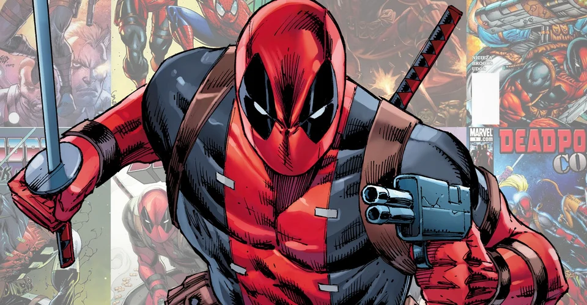
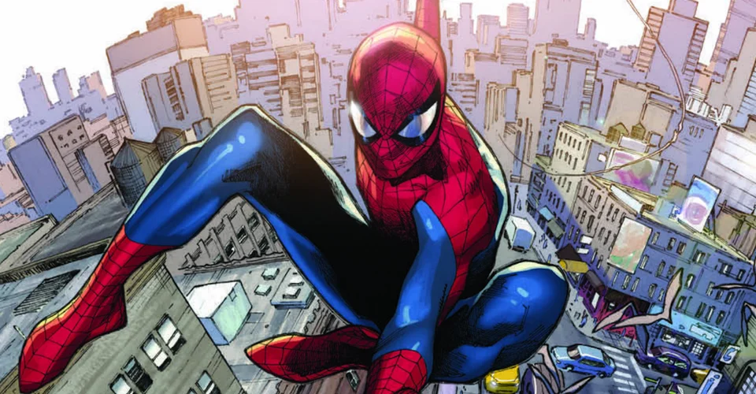
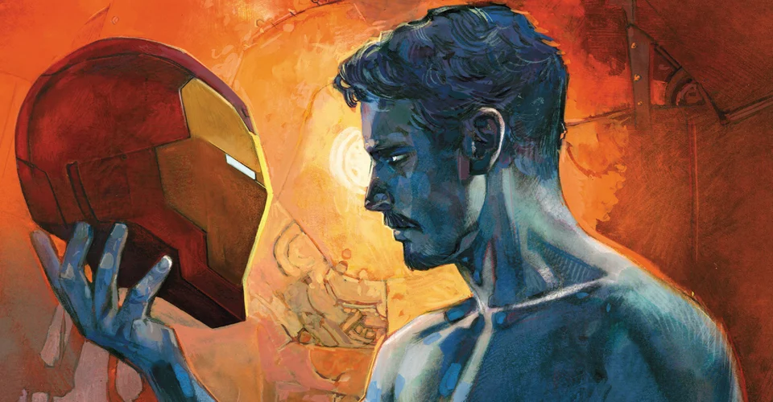

News

Deadpool's Lesser-Known Secret Power Is One Of His Strongest
Deadpool's known for his near-immortality, but another one of the Merc with a Mouth's lesser-known superpowers is also a pretty big deal.Among the many Marvel superheroes, Deadpool is considered one of the most powerful thanks to a healing factor which makes him practically invulnerable. Cut off his head and Deadpool still can live. However, one of his lesser-known powers makes him practically invulnerable to having his mind read.The Merc with a Mouth was created by Fabian Nicieza and Rob Liefeld first debuted in New Mutants #98. Like Wolverine, Deadpool gains his powers after being experimented on as part of the Weapon X program. The mercenary eventually evolved into the funny, fourth-wall-breaking character who has been popularized largely thanks to the Deadpool movies.......Read More

Can Spider-Man Actually Talk To Spiders?
Spider-Man wasn't gifted the power to talk to spiders when he gained his abilities. However, he has been able to talk to spiders in past storylines.There's no shortage of insect-based heroes in the Marvel Universe. However, besides Ant-Man and a few other characters, none of those heroes can communicate directly with the creatures that inspire their personas. It begs the question, can Spider-Man actually talk to spiders?Peter Parker's spider-based powers didn't originally come with the ability to talk to Spiders. He did gain spider-sense, the ability to climb and cling onto walls, as well as superhuman strength and durability. But, missing from his powers was the ability to control and communicate with arachnids. However, there are examples where Spider-Man was given powers (or transformed into a different realm) which made talking with spiders possible.......Read More
 The Joker Explains His OWN Origin Story in DC's Batman
The Joker Explains His OWN Origin Story in DC's Batman
Phasellus imperdiet, nulla et dictum interdum, nisi lorem egestas odio, vitae scelerisque enim ligula venenatis dolor. Maecenas nisl est, ultrices nec congue eget, auctor vitae massa. Fusce luctus vestibulum augue ut aliquet. Mauris ante ligula, facilisis sed ornare eu, lobortis in odio. Praesent convallis urna a lacus interdum ut hendrerit risus congue. Nunc sagittis dictum nisi, sed ullamcorper ipsum dignissim ac. In at libero sed nunc venenatis imperdiet sed ornare turpis. Donec vitae dui eget tellus gravida venenatis. Integer fringilla congue eros non fermentum. Sed dapibus pulvinar nibh tempor porta. Cras ac leo purus. Mauris quis diam velit.The Designer is launching the 'perfect crimes' they created under his guidance, years earlier. And now it's time for Joker to tell a story of his own......Read More

Iron Man Tony Stark is Coming BACK To Life (Wait, What?)
Tony Stark may have died years ago, followed recently by his clone. But according to Marvel, Iron Man 2020 is bringing him back. We think?Fans of Tony Stark didn't know what to make of Iron Man 2020 when it was first announced, threatening to remove Tony from the role and give it to his brother instead. But the biggest surprise has just arrived... now that the battle of brothers has seen Tony Stark killed all over again.That "again" isn't referring to the first death of Iron Man in Avengers: Endgame, although Tony's latest comic book death is certainly closer to the movie's sacrifice than his first one. In the comics, Iron Man was killed by Captain Marvel as part of the Civil War II event. But the sting of that murder was cut short when it was revealed that a new Tony Stark clone was being grown, eventually born and uploaded with a digital copy of Tony's consciousness........Read More
Image to Publish 1970s-Inspired DRACULA, MOTHERF***ER
Bestselling writer Alex de Campi (Archie vs. Predator) and Erica Henderson (Squirrel Girl) team up for a pulpy, pulse-pounding, original graphic novel titled Dracula, Motherf**ker. This California-set, psychological horror story will hit stores from Image Comics in October.Straddling two different timelines, Dracula, Motherf**ker travels between Vienna, 1889 where Dracula’s brides nail him to the bottom of his coffin and Los Angeles, 1974: wherein an ageing starlet decides to raise the stakes. Crime scene photographer Quincy Harker is the only man who knows it happened, but will anyone believe him... before he gets outlined in chalk himself?“Most people who know my work are aware that I love pulp/exploitation cinema so me doing a book called Dracula, Motherf**ker shouldn’t really surprise anyone,” said De Campi.......Read More
Copyright © 2020 mycomicslist.net